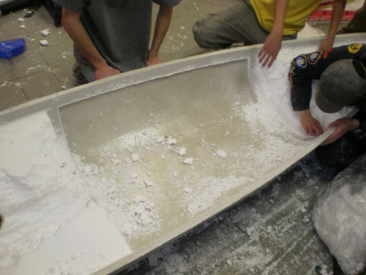
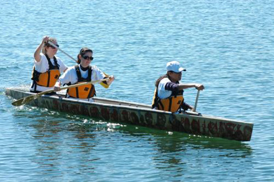

The University of Toronto Concrete Canoe Team is a multi-disciplinary design team completely managed by students. Over thirty undergraduates in the Faculty of Applied Science and Engineering from all the disciplines, as well as students from the Faculty of Arts and Science, form the active team.
As you may expect, we take concrete, a material normally strong in compression and weak in tension - not to mention really dense, and turn it on its head. When we are done with it, we have concrete that is not only good in tension, but less dense than water! Each year, we design, test, and construct our own concrete mix and canoe design, which is raced against other universities annually. This year’s competition is hosted in Montreal, Quebec by the École de Technologie Supérieure, where we aim to place among the top concrete canoe teams in Canada.
The Concrete Canoe team is a great way for students to apply the knowledge they gain in the classroom to a stimulating, interactive competition. New members are always welcome; sign up to our mailing list at ut.canoe@gmail.com for more information.
Our executive team // 2013-2014
|
|

|
Faculty Advisor
Karl Peterson
Civil Engineering
|
|
|
|
-------------------------------
|
-------------------------------
|
|
|
|
Technical Project Manager
Nigel Fung
Civil Engineering
|
|
Logistics Project Manager
Marko Spudic
Civil Engineering
|
|
|
-------------------------------
|
-------------------------------
|
|
|
|
Concrete Lead
Hangfei Gu
Civil Engineering
|
|
Theme Director
Sitara Chiu
Civil Engineering
|
|
|
Concrete Lead
Stephanie Nykios
Material Science Engineering
|

|
Graphic Designer
Tneshia Pages
Architectural Design
|
|
|
Structural Lead
Gabriel Wolofsky
Civil Engineering
|
|
Finishing Manager
Rejuana Alam
Chemical Engineering
|

|
Hull Lead
Cory Sulpizi
Civil Engineering
|
|
Treasurer
Eashita Ratwani
Industrial Engineering
|

|
Construction Manager
TBD
|
|
Internal Sponsorship Manager
Haruna Monri
Civil Engineering
|
|
|
|
|
Webmaster
Gordon Tang
Industrial Engineering
|
|
↑ Back to Top ↑
Our paddling team
|
Paddling Manager
Marko Spudic
Civil 1T3+PEY
|
|
Paddlers: TBD
Team under development.
Join the team! E-mail Marko at ut.canoe@gmail.com
↑ Back to Top ↑
Canoe construction
Every year, we cast our canoe on a day we call 'casting day.' This day has traditionally taken place during the week, but has been moved to the first weekend in January after school starts.
However the entire development of the canoe is a time consuming process that stretches many months.
Phase One: Research and Development
In this phase, we do research to develop an ideal mix and hull design. See those respective sections for more details.
Phase Two: Mould Construction
After the hull design has been finalized, a male mold is constructed from styrofoam using CNC machinery. This mold, made in pieces, is then assembled, sanded and shrink wrapped to prepare for casting.
Phase Three: Mix Pre-Bagging
After our mix has been decided on, all its dry components are put in plastic bags so they are ready for casting day.
Phase Four: Casting Day!
On casting day, concrete is mixed and hand-cast onto the surface of the canoe. Care is taken to ensure layers are thin and uniform in thickness. After each layer of concrete (except the outermost layer), we add a layer of carbon fibre weaving, and care is taken to make sure the weaving is incorporated into the concrete. This all-day event is the most important day of the year for the team.
Phase Five: Curing
A humidity tent is built for the canoe on casting day, and the canoe is left to cure for several weeks. During this time, the canoe hardens and strengthens.
Phase Six: Demoulding
After it has cured, the mould is removed from the interior of the canoe, and is destroyed in the process.

Phase Seven: Sanding
The cured canoe often has a rough, uneven surface that can be sanded down. We use a combination of belt-sanders, sandpaper, and grinders to achieve a smooth finish. This is a time-consuming process.
Phase Eight: Finishing
The canoe is then finished using sealer and letters (either painted or decals) are placed on the canoe showing our school and the name of the canoe. In the past few years we have further decorated the canoe using acid stains with excellent results.
↑ Back to Top ↑
Hull design
The Concrete Canoe hull design team is responsible for designing the actual shape of the canoe. Each year, we attempt to design the “optimal” canoe, given the constraints of the competition.
The design process consists of several stages. First the team must decide on a rough geometry; how long will the canoe be? how wide? how deep? Decisions made here will affect the rest of the team, especially the paddlers who will ultimately be the ones racing the canoe. While a wider canoe may be more stable, for example, it will experience more resistance in the water, so it is important to understand the priorities of the paddling team.
Second, it is necessary to model the canoe. This model is usually created using 3D computer aided design (CAD) software, and it serves as a basis for the analyses of the canoe that will follow.
Third, we use computer software to analyse the efficiency and safety of the canoe. This includes structural analysis by finite elements (FEA) to determine the stresses the canoe will experience in the water, as well as computational fluid dynamics (CFD) to calculate the drag the canoe will face during races. This information is then used to revise the original design to improve performance within a reasonable factor of safety.
Finally, the hull design team must translate the computer model of the canoe hull into a physical mold on which the canoe will be cast. The prepared 3D model is used to instruct a milling machine which forms the pieces of Styrofoam that will make up the body of the mold.
Hull design for the University of Toronto Concrete Canoe team is a comprehensive process; from initial concept to final product, we are dedicated to creating a top-performing canoe, and equally importantly, to having fun along the way!
↑ Back to Top ↑
Mix and composite design
Each year the UT Concrete Canoe Team continues its research into the development of high tensile strength, low density, workable concrete. The mix must also adjust to the always-changing mix rules of the competition.
With a composite flexural strength of 10.5 MPa and a density around 80% that of water, our team boasts one of the most highly developed concrete mixes of all schools involved in the competition.
Concrete Basics
Concrete is usually a mix of cement (and/or other binders such as fly-ash), aggregates (such as sand or gravel), water, and admixtures (such as viscosity-decreasing super plasticizers).
The chemical reaction that takes place in concrete is called a hydration reaction. In this process minerals in cement react with water and bind the aggregates in the mix together. This reaction is relatively slow, and there is a period of time, called the curing period, while it proceeds and releases heat.
Our Mix
Our current mix uses Federal white cement, metakaolin, flyash type C, amorphous calcium aluminosilicate (VCAS) and Cembinder colloidal nano-silica as binders, Siscor hollow glass spheres, K1 glass microspheres and Expancel expanded polymer microspheres as aggregates, and acrylic polymer latex, high-range water reducer, air-entrainer and poly(vinyl alcohol) as admixtures.
The canoe is constructed from alternating layers of low density concrete and carbon fibre. The carbon fibre, along with ultra-high molecular weight polyethylene 'Dyneema' fibres incorporated into the concrete mix, help increase the tensile strength of the canoe.
Recent Testing
Our team has in recent years tested the addition of poly(acrylic acid), poly(vinyl alcohol), various latexes, silane admixtures, Expancel plastic spheres, binders (flyash, blast furnace slag, silica fume, metakaolin, amorphous calcium aluminosilicate, aqueous nanosilica), various coloured pigments, Ipanex, Kalmatron, and various plastic and mineral fibres to the mix.
↑ Back to Top ↑
Logistics and management
The Concrete Canoe team is managed entirely by students. This means that everything from concrete design, hull design, sponsorship, finance, recruitment to trip logistics are managed by students. At the beginning of each school year, all the members of the team come together to discuss about the following year's plans and goals. The new executive team is also chosen at this time based on each member's experience on the team and interests.
In recent years, the team has moved towards having two project managers who oversee the entire project - one technical project manager and one logistical project manager. Each project manger's responsibilities are further distributed amongst several managers who oversees specific aspects of the project. These include the sponsorship manager, paddling coach, hull design manager and mix and composite design manager. The tasks of these managers are further broken down amongst a number of technical supports who works closely with each of the managers.
The reason for the large executive body is because of the student-run nature of the team. All of our team members take time outside of school to come together and we try our best to spread the responsibilties out to as many members as possible. There are a few advantages in doing this:
lowers the amount of work on any one member.
involves many members in the design process.
helps the team develop teamwork skills.
more experienced members can teach newer members and help pass on knowledge learned from previous years.
As a result, the Concrete Canoe team at the University of Toronto has developed into a highly self motivating, diverse and one of the largest design team on campus.
↑ Back to Top ↑
Paddling
Every year we prepare a team of paddlers to race the canoe at the competition.
This year we will be consistently bringing our canoes down to the lake to allow people to try to paddle a concrete canoe - somewhat more difficult than a regular canoe. We will also be looking into indoor paddling lessons.
Paddlers are an important part of the team and even with a relatively inexperienced team we have done very respectably (4th place overall in 2012) against some teams with a large amount of experience.
Join the paddling team and help steer U of T Concrete Canoe to victory!
↑ Back to Top ↑
Canadian National Concrete Canoe Competition
There are many other important divisions of Concrete Canoe including sponsorship, food, construction, and paddling. In May, teams from universities across Canada will gather to compete at the 19th annual Canadian National Concrete Canoe Competition hosted by the École de Technologie Supérieure! Several races are held (the 2007 races were featured on the Discovery Channel), and the canoes are judged. Last year, we placed 4th overall in the competition against 9 other universities. With the addition of talented 1T6 engineers like yourself, we hope to make a splash in 2013!
The Concrete Canoe Competition itself involves more than just racing each team's final product. Proper engineering methods and professionalism is highly encouraged in the competition. Thus, large portions of the scores are allocated to the oral presentation on the design of the canoe as well as the written technical report which details these designs. The canoes are also weighted before the races and points are deducted for inaccurate calculations regarding the estimated weight of the canoe. This is to help enforce the importance of accurate estimates and error margins in the work of an engineer.
The shape and composition of the concrete mix of the canoe is strictly guided by the competition rules. Aside from complying to the required dimensions as per the rules, aesthetics are also taken into account in the judging process. Further, the canoes are subject a swamp test in which the canoe is submerged completely underwater and is required to float back to the surface of the water by itself. All of these requirements are challenges that members of the canoe team must overcome every year.

The highlight of the competition, of course, are the races. These include the men's endurance, women's endurance, men's sprint, women's sprint and the co-ed sprint. While the placements of races depend entirely on the efforts of the team's paddlers, the reminder of the team is encouraged to cheer as there is an award given for the most spirited team at competition.
The Concrete Canoe Competition is a competition that entails so much more than just racing the canoes. This is the reason why we, at the University of Toronto, spend endless hours on the design and finishing of our canoe because we believe that every ounce of our efforts counts toward the final placement of our canoe at competition.
↑ Back to Top ↑
Canoe songs
Alright, nothing shows more SkuleTM spirit than knowing the songs and verses of Godiva's Hymn associated with your favourite clubs. Here we present the song(s) and verses of Concrete Canoe!1
This first song follows the tune of another SkuleTM song, Marching Bands (check your F!rosh handbook):
- When canoes and concrete fall in line,
- We've got to build a bridge another time.
- And for the mix I yell, yell, yell, yell, yell,
- And for the hull design I yell, I yell like hell.
- We're going to stroke, stroke, stroke, for every yard,
- Circle the buoys and hit the water hard,
- And throw the paddlers upon the surf!
- (GET 'N FIRST)
- WOO! WOO! WOO!
Okay, easy as pie right? (ha, get it? pie!) These next two verses are from Godiva's Hymn, be sure to share them with your fellow SkuleTM mates whenever possible (oh and if you're first reaction to Godiva's Hymn is "who's what!?" then seriously, open your F!rosh handbook):
- The Romans fed their concrete mix the blood of ox and men
- The Mafia uses theirs to teach a lesson now and then
- But for all their pretty tricks their evil cannot even tie
- Our trusting it in a canoe to float and keep us dry!
- Any Civil Engineer can go for days and days
- Describing how concrete's used in oh-so many ways,
- But not till one dark gray night of true debauchery
- Was using it to float a boat considered one of these!